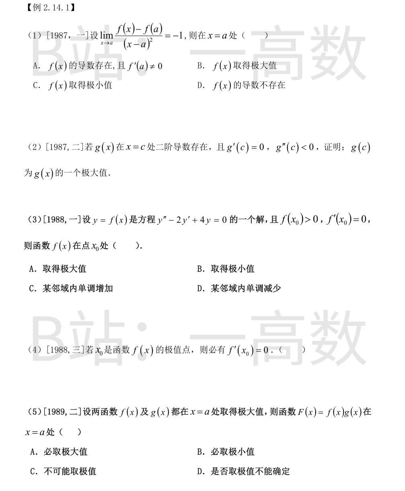
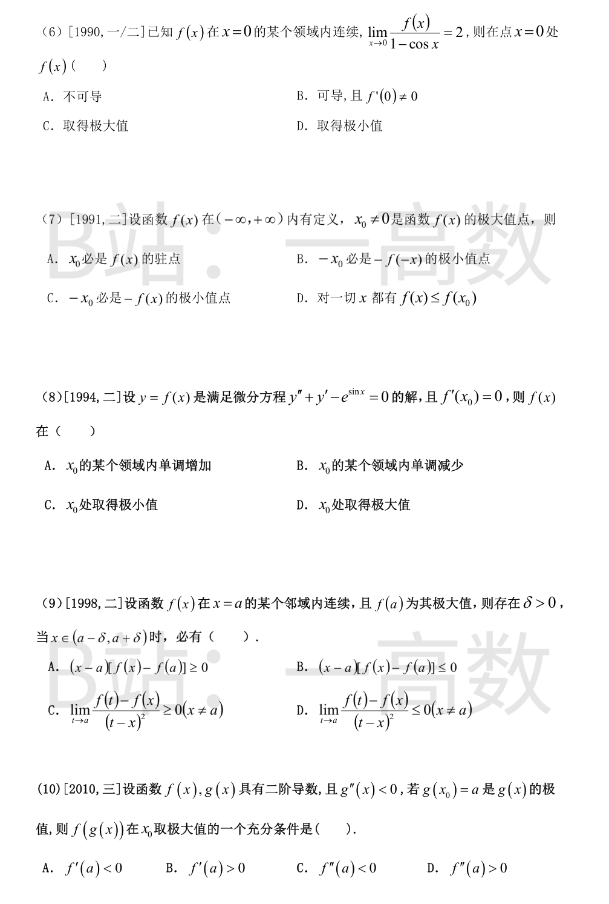
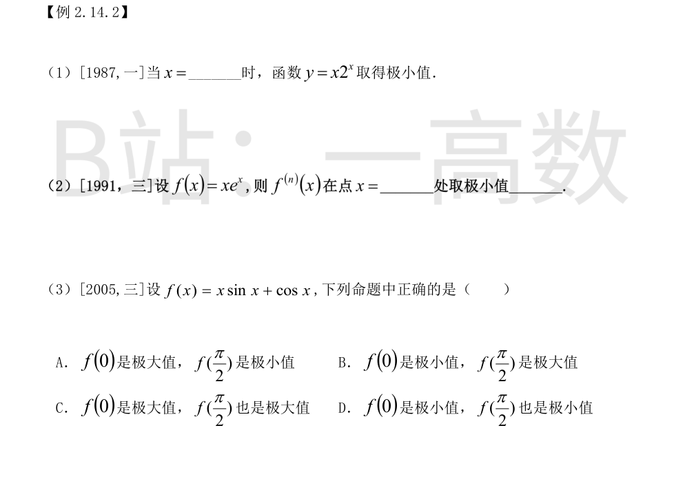
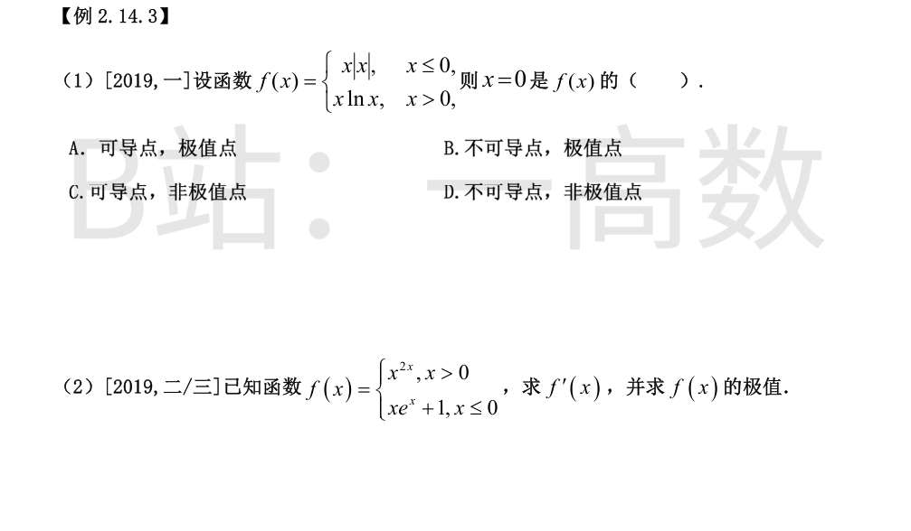
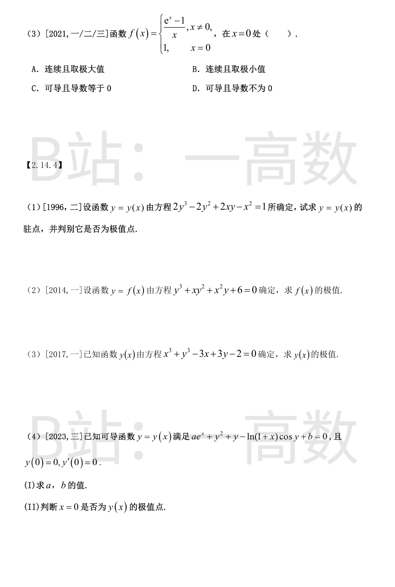
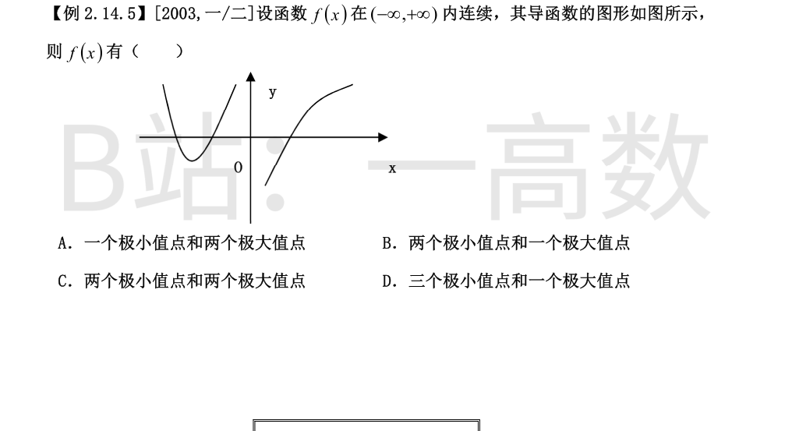
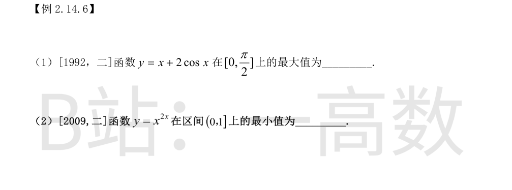
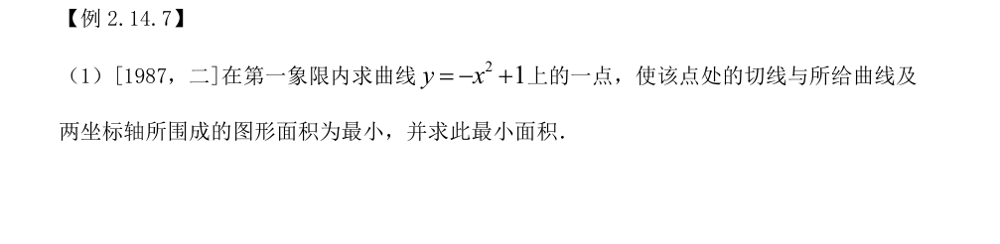

记 $g(x)=\dfrac{f(x)-f(a)}{(x-a)^2}\to-1$（$x\to a$）。则在 $a$ 的去心邻域内 $g(x)<0$，从而
$$f(x)-f(a)=(x-a)^2g(x)<0,\quad \text{即 } f(x)<f(a)$$
故 $f(a)$ 为极大值。
又 $f'(a)=\lim_{x\to a}\dfrac{f(x)-f(a)}{x-a}=\lim_{x\to a}(x-a)\,g(x)=0$，即导数存在且为零，排除 A、D；C 与结论相反。选 B。
由二阶导数定义及 $g'(c)=0$：
$$g''(c)=\lim_{x\to c}\frac{g'(x)-g'(c)}{x-c}=\lim_{x\to c}\frac{g'(x)}{x-c}<0$$
由极限的局部保号性，存在 $\delta>0$，当 $0<|x-c|<\delta$ 时 $\dfrac{g'(x)}{x-c}<0$，即
$$c-\delta<x<c\ \text{时}\ g'(x)>0;\qquad c<x<c+\delta\ \text{时}\ g'(x)<0$$
由拉格朗日中值定理：对 $x\in(c-\delta,c)$，$g(x)-g(c)=g'(\xi)(x-c)$，其中 $\xi\in(x,c)$，$g'(\xi)>0$ 而 $x-c<0$，故 $g(x)<g(c)$；
对 $x\in(c,c+\delta)$，$g(x)-g(c)=g'(\eta)(x-c)$，$\eta\in(c,x)$，$g'(\eta)<0$ 而 $x-c>0$，故 $g(x)<g(c)$。
综上，在 $(c-\delta,c+\delta)$ 内 $x\ne c$ 时恒有 $g(x)<g(c)$，即 $g(c)$ 为极大值。$\blacksquare$
将 $x_0$ 代入微分方程：$f''(x_0)=2f'(x_0)-4f(x_0)=-4f(x_0)<0$（因 $f(x_0)>0$，$f'(x_0)=0$）。
由极值的第二充分条件，$f(x_0)$ 为极大值。选 A。
错误。极值点处导数未必存在。反例：$f(x)=|x|$ 在 $x_0=0$ 处取极小值，但 $f'(0)$ 不存在。
$f'(x_0)=0$（驻点）只是可导函数取极值的必要条件，题目未给可导条件，故命题不成立。
取 $f(x)=g(x)=e^{-x^2}$：都在 $x=0$ 取极大值，而 $F=e^{-2x^2}$ 在 $x=0$ 取极大值；
取 $f(x)=g(x)=-(1+x^2)$：都在 $x=0$ 取极大值，而 $F=(1+x^2)^2$ 在 $x=0$ 取极小值。
两种情形均可能出现，故 $F$ 在 $x=a$ 是否取极值不能确定，选 D。
由连续性：
$$f(0)=\lim_{x\to0}f(x)=\lim_{x\to0}\frac{f(x)}{1-\cos x}\,(1-\cos x)=2\cdot0=0$$
因 $1-\cos x>0\ (x\ne0)$ 且比值的极限 $2>0$，由保号性存在去心邻域使 $\dfrac{f(x)}{1-\cos x}>0$，从而 $f(x)>0=f(0)$，即 $x=0$ 为极小值点。选 D。
（另可算得 $f'(0)=\lim_{x\to0}\frac{f(x)}{x}=\lim\frac{f(x)}{1-\cos x}\cdot\frac{1-\cos x}{x}=2\cdot0=0$，故 A、B 均不对。）
A 错：极大值点处未必可导（如 $f(x)=-|x|$，$x_0=0$），不一定是驻点。
B 对：令 $h(x)=-f(-x)$。当 $x$ 落在 $-x_0$ 的某邻域内时 $-x$ 落在 $x_0$ 的对应邻域内，$f(-x)\le f(x_0)$，故
$$h(x)=-f(-x)\ge-f(x_0)=h(-x_0)$$
即 $-x_0$ 是 $-f(-x)$ 的极小值点。
C 错：$x_0$（而不是 $-x_0$）是 $-f(x)$ 的极小值点。
D 错：极大值是局部概念，不能保证对一切 $x$ 有 $f(x)\le f(x_0)$。
由方程 $f''(x)=e^{\sin x}-f'(x)$，在 $x_0$ 处
$$f''(x_0)=e^{\sin x_0}-f'(x_0)=e^{\sin x_0}>0$$
由第二充分条件，$f$ 在 $x_0$ 处取极小值。选 C。
极大值只保证邻域内 $f(x)\le f(a)$：对 $x>a$ 有 $(x-a)[f(x)-f(a)]\le0$，对 $x<a$ 则 $\ge0$，故 A、B 只在单侧成立，排除。
对固定的 $x\ne a$（在邻域内），令 $t\to a$：
$$\lim_{t\to a}\frac{f(t)-f(x)}{(t-x)^2}=\frac{f(a)-f(x)}{(a-x)^2}\ge0$$
（分子 $f(a)-f(x)\ge0$，分母 $(a-x)^2>0$）。故 C 成立，选 D 不成立（同式中 $\le0$ 错误）。选 C。
令 $F(x)=f(g(x))$。$g$ 在 $x_0$ 取极值且可导 $\Rightarrow g'(x_0)=0$，故
$$F'(x_0)=f'(g(x_0))\,g'(x_0)=0$$
$$F''(x_0)=f''(g(x_0))\,[g'(x_0)]^2+f'(g(x_0))\,g''(x_0)=f'(a)\,g''(x_0)$$
已知 $g''(x_0)<0$，故 $F''(x_0)<0\iff f'(a)>0$，此时 $x_0$ 为 $F$ 的极大值点。选 B。

$$y'=2^x+x\cdot2^x\ln2=2^x(1+x\ln2)\stackrel{!}{=}0\ \Longrightarrow\ x=-\frac{1}{\ln2}$$
$y''=2^x\ln2\,(2+x\ln2)$，在 $x=-\frac{1}{\ln2}$ 处 $y''=2^x\ln2>0$，故该点为极小值点。
由归纳法（或莱布尼茨公式）$f^{(n)}(x)=(x+n)e^x$。令 $g(x)=(x+n)e^x$：
$$g'(x)=(x+n+1)e^x=0\ \Longrightarrow\ x=-(n+1)$$
$g''(x)=(x+n+2)e^x$，在 $x=-(n+1)$ 处 $g''=e^{-(n+1)}>0$，为极小值点。
极小值 $g\left(-(n+1)\right)=-e^{-(n+1)}$。
$$f'(x)=\sin x+x\cos x-\sin x=x\cos x$$
驻点：$x=0$ 与 $x=\frac{\pi}{2}$。$f''(x)=\cos x-x\sin x$。
$$f''(0)=1>0\ \Rightarrow\ f(0)=1\ \text{为极小值};\qquad f''\Big(\frac{\pi}{2}\Big)=-\frac{\pi}{2}<0\ \Rightarrow\ f\Big(\frac{\pi}{2}\Big)=\frac{\pi}{2}\ \text{为极大值}$$
选 B。


$x<0$：$f(x)=x\cdot(-x)=-x^2<0$；$0<x<1$：$x\ln x<0$；而 $f(0)=0$。故在 $x=0$ 的去心邻域内 $f(x)<f(0)$，$x=0$ 是极大值点（极值点）。
可导性：左导数 $\lim_{x\to0^-}\dfrac{-x^2-0}{x}=0$ 存在；右侧 $f'(x)=\ln x+1\to-\infty$，右导数不存在。
故 $x=0$ 是不可导点、极值点。选 B。
$x>0$：$f=x^{2x}=e^{2x\ln x}$，$f'=2x^{2x}(\ln x+1)$；$x<0$：$f'=(1+x)e^x$。
连续性：$\lim_{x\to0^+}x^{2x}=e^{2x\ln x}\to e^0=1=f(0)$，$f$ 在 $\mathbb R$ 上连续。
$x=0$ 处：左导数 $=\lim_{x\to0^-}\dfrac{xe^x+1-1}{x}=1$；右导数 $=\lim_{x\to0^+}\dfrac{x^{2x}-1}{x}=\lim_{x\to0^+}2\ln x=-\infty$，故 $f'(0)$ 不存在。
驻点与符号分析：
$x>0$：$\ln x+1=0\Rightarrow x=\frac1e$；$\left(0,\frac1e\right)$ 内 $f'<0$，$\left(\frac1e,+\infty\right)$ 内 $f'>0$，得极小值 $f\left(\frac1e\right)=e^{-2/e}$。
$x<0$：$f'=(1+x)e^x$，$x<-1$ 时 $f'<0$，$-1<x<0$ 时 $f'>0$，得极小值 $f(-1)=1-\frac1e$。
$x=0$：$x<0$ 时 $xe^x<0\Rightarrow f(x)<1$；$0<x<1$ 时 $\ln x<0\Rightarrow x^{2x}=e^{2x\ln x}<1$，两侧均有 $f(x)<f(0)=1$，故 $x=0$（不可导点）为极大值点，极大值 $f(0)=1$。
$$f'(x)=\begin{cases}2x^{2x}(\ln x+1), & x>0\\ (1+x)e^x, & x<0\end{cases},\qquad f'(0)\ \text{不存在}$$
连续性：$\lim_{x\to0}\dfrac{e^x-1}{x}=1=f(0)$，连续。
$$f'(0)=\lim_{x\to0}\frac{\dfrac{e^x-1}{x}-1}{x}=\lim_{x\to0}\frac{e^x-1-x}{x^2}\stackrel{L}{=}\lim_{x\to0}\frac{e^x-1}{2x}=\frac{1}{2}\ne0$$
故 $f$ 在 $x=0$ 处可导且导数不为 0，选 D。（$f'(0)=\frac12>0$ 说明 $x=0$ 不是极值点。）
方程两边对 $x$ 求导：
$$(6y^2-4y+2x)\,y'+2y-2x=0\ \Longrightarrow\ y'=\frac{x-y}{3y^2-2y+x}$$
令 $y'=0\Rightarrow y=x$，代回原方程：
$$2x^3-2x^2+2x^2-x^2=1\ \Longrightarrow\ 2x^3-x^2-1=(x-1)(2x^2+x+1)=0$$
唯一实根 $x=1$（$2x^2+x+1$ 无实根），即唯一驻点 $x=1$，此时 $y=1$，且分母 $3-2+1=2\ne0$。
对 $(6y^2-4y+2x)y'=2x-2y$ 两边再求导：
$$(12yy'-4y'+2)\,y'+(6y^2-4y+2x)\,y''=2-2y'$$
在 $(1,1)$ 处 $y'=0$：$(6-4+2)y''=2\Rightarrow y''=\dfrac12>0$。
故 $x=1$ 为极小值点，极小值 $y(1)=1$。
方程两边对 $x$ 求导：
$$(3y^2+2xy+x^2)\,y'+y^2+2xy=0\ \Longrightarrow\ y'=-\frac{y^2+2xy}{3y^2+2xy+x^2}$$
令 $y'=0$：$y^2+2xy=0\Rightarrow y=0$（代入原方程得 $6=0$，舍）或 $y=-2x$。代回：
$$-8x^3+x\cdot4x^2+x^2(-2x)+6=0\ \Longrightarrow\ -6x^3+6=0\ \Longrightarrow\ x=1,\ y=-2$$
分母在 $(1,-2)$ 处 $=12-4+1=9\ne0$。
记 $F=y^3+xy^2+x^2y+6$，$y''=-\dfrac{F_{xx}+2F_{xy}y'+F_{yy}(y')^2}{F_y}$。$F_{xx}=2y=-4$，$F_y=9$，$y'=0$，故
$$y''(1)=\frac{4}{9}>0$$
故 $f$ 只有极小值 $f(1)=-2$。
方程两边对 $x$ 求导：$3x^2+3y^2y'-3+3y'=0$，
$$y'=\frac{1-x^2}{1+y^2}$$
令 $y'=0\Rightarrow x=\pm1$。
$x=1$：$1+y^3-3+3y-2=0\Rightarrow y^3+3y-4=0$，$y=1$ 为唯一实根（$y^2+y+4>0$），得点 $(1,1)$；
$x=-1$：$-1+y^3+3+3y-2=0\Rightarrow y(y^2+3)=0\Rightarrow y=0$，得点 $(-1,0)$。
记 $F=x^3+y^3-3x+3y-2$，在驻点处 $y'=0$，故 $y''=-\dfrac{F_{xx}}{F_y}=-\dfrac{6x}{3y^2+3}$：
$$(1,1):\ y''=-\frac{6}{6}=-1<0\ \Rightarrow\ \text{极大值 } y(1)=1;\qquad (-1,0):\ y''=\frac{6}{3}=2>0\ \Rightarrow\ \text{极小值 } y(-1)=0$$
(I) 将 $x=0,\ y=0$ 代入方程：$a+b=0$。方程两边对 $x$ 求导：
$$ae^x+2yy'+y'-\frac{\cos y}{1+x}+\ln(1+x)\sin y\cdot y'=0$$
代入 $x=0,\ y=0,\ y'=0$：$a-1=0\Rightarrow a=1,\ b=-1$。
(II) 再对 $x$ 求导（逐项）：$e^x$ 项给 $e^x$；$2yy'$ 给 $2(y')^2+2yy''$；$y'$ 给 $y''$；
$$\frac{d}{dx}\left[-\frac{\cos y}{1+x}\right]=\frac{\sin y\,(1+x)\,y'+\cos y}{(1+x)^2}\Big|_{(0,0)}=1;\qquad \frac{d}{dx}\big[\ln(1+x)\sin y\cdot y'\big]\Big|_{(0,0)}=0$$
在 $x=0$ 处（$y=0,y'=0$）合并：
$$1+0+y''(0)+y''(0)+1=0\ \Longrightarrow\ y''(0)=-2<0$$
故 $x=0$ 是 $y(x)$ 的极大值点，极大值 $y(0)=0$。

设左支与 $x$ 轴交点为 $x_1<x_2<0$，右支与 $x$ 轴交点为 $x_3>0$。$f$ 处处连续，故 $f'$ 变号的点（含 $f'$ 不存在的 $x=0$）即为极值点：
$x_1$：$f'$ 由正变负，极大值点；$x_2$：由负变正，极小值点；
$x=0$：左侧 $f'>0$、右侧 $f'<0$（图形在 $y$ 轴右侧从 $x$ 轴下方开始），$f$ 连续，故 $x=0$ 为极大值点；
$x_3$：由负变正，极小值点。
共两个极小值点（$x_2,x_3$）和两个极大值点（$x_1,0$）。选 C。

$$y'=1-2\sin x=0\ \Rightarrow\ \sin x=\frac12\ \Rightarrow\ x=\frac{\pi}{6}$$
比较端点与驻点：$y(0)=2$，$y\left(\frac{\pi}{6}\right)=\frac{\pi}{6}+2\cdot\frac{\sqrt3}{2}=\frac{\pi}{6}+\sqrt3\approx2.26$，$y\left(\frac{\pi}{2}\right)=\frac{\pi}{2}\approx1.57$。
故最大值为 $\sqrt3+\dfrac{\pi}{6}$。
$y=e^{2x\ln x}$，$y'=2x^{2x}(\ln x+1)=0\ \Rightarrow\ x=\frac1e$。
$x<\frac1e$ 时 $y'<0$，$x>\frac1e$ 时 $y'>0$，故 $x=\frac1e$ 为最小值点：
$$y\Big(\frac1e\Big)=\Big(\frac1e\Big)^{2/e}=e^{-2/e}$$
（比较：$x\to0^+$ 时 $y\to1$，$y(1)=1$，均大于 $e^{-2/e}\approx0.48$。）

设切点 $P(a,\ 1-a^2)$（$0<a<1$）。$y'=-2x$，切线：
$$y-(1-a^2)=-2a(x-a)\ \Longleftrightarrow\ y=-2ax+1+a^2$$
其 $y$ 轴截距为 $1+a^2$，$x$ 轴截距 $x_0=\dfrac{1+a^2}{2a}>1$（因 $(1-a)^2>0$）。
切线与两坐标轴围成的三角形面积为 $\dfrac12\cdot\dfrac{1+a^2}{2a}\cdot(1+a^2)=\dfrac{(1+a^2)^2}{4a}$；曲线与两坐标轴围成的面积为 $\displaystyle\int_0^1(1-x^2)\,dx=\dfrac23$。所围图形面积：
$$S(a)=\frac{(1+a^2)^2}{4a}-\frac23$$
$$S'(a)=\frac{(1+a^2)(3a^2-1)}{4a^2}=0\ \Longrightarrow\ a=\frac{1}{\sqrt3}\ (\text{唯一驻点})$$
$a<\frac{1}{\sqrt3}$ 时 $S'<0$，$a>\frac{1}{\sqrt3}$ 时 $S'>0$，故为最小值。
$$S_{\min}=\frac{(4/3)^2}{4/\sqrt3}-\frac23=\frac{4\sqrt3}{9}-\frac23=\frac{4\sqrt3-6}{9}\approx0.103$$
所求点为 $\left(\dfrac{\sqrt3}{3},\ \dfrac23\right)$。
【仲裁修正】独立校验发现分歧，经仲裁重解，以本答案为准：所围面积 S(a)=\frac{(1+a^2)^2}{4a}-\frac23，唯一驻点 a=1/√3（S' 在其两侧由负变正）为最小值点，S_min=(4√3-6)/9；solver 与 A 正确，B 给出的切点与面积均错误